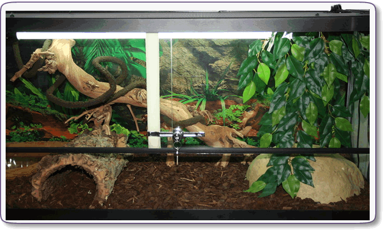
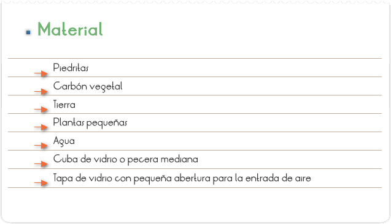
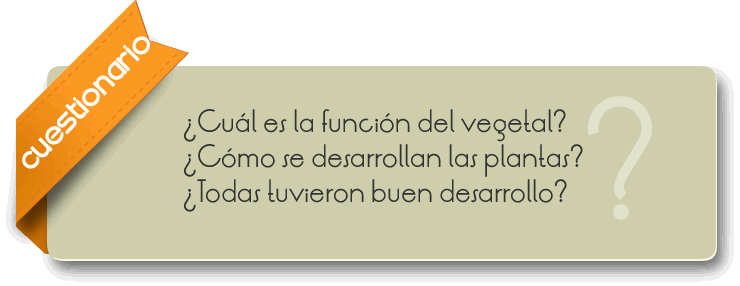

Los terrarios o terrariums (en latín) son pequeños invernaderos con los que se recrean las condiciones de un ambiente tropical, es decir humedad alta, temperatura alta y constante. Esto posibilita que se puedan cultivar plantas tropicales y subtropicales. Al igual que los acuarios, suelen ser de vidrio, y contener elementos calefactores.

Observar el crecimiento de algunas plantas en un terrario.

1. Poner en lo hondo de la cuba una camada (aproximadamente 3 cm) de piedritas y sobre ellas una camada (aproximadamente 1cm) de carbón vegetal.
2. Cubrir el carbón vegetal con tierra (aproximadamente 7cm) y colocar las plantitas, manteniendo cierta distancia entre ellas.
3. Mojar un poco las plantas y cubrir el terrario con la tapa.
4. Observar el crecimiento de las plantas en el día a día y anotar.

Para el montaje del terrario, ayudar a los alumnos en la elección de las plantas, siendo interesante seleccionar varias especies.
Para un terrario mas decorativo, del “tipo florista”, deben ser colocadas especies a la sombra o locales de poca luminosidad (musgos y ficus hepáticos) y debe ser puesto en lugar fresco.
Si el terrario es del “tipo desierto”, poner pequeños cactus, mantener en local caliente y que reciba sol. La función del carbón activo es absorber olores (ya que las raíces quedan abajo de la tierra para que puedan fijar la planta y recibir la humedad que llegará hasta las hojas).
Los alumnos podrán observar que para vivir, la mayoría de las plantas precisan de tierra, agua, aire, luz y temperatura adecuada. Plantas distintas necesitan para crecer de distintas temperaturas, adecuada a cada una. La estructura de las plantas está relacionada al lugar adonde se desarrollan.
En el terrario podemos poner animales pequeños como sapos, ranas, lagartijas, camaleón, necesitando apenas hacer una pequeña adaptación, introduciéndose un pequeño recipiente con agua que deberá ser cambiada regularmente y providenciada alimentación adecuada para los mismos.